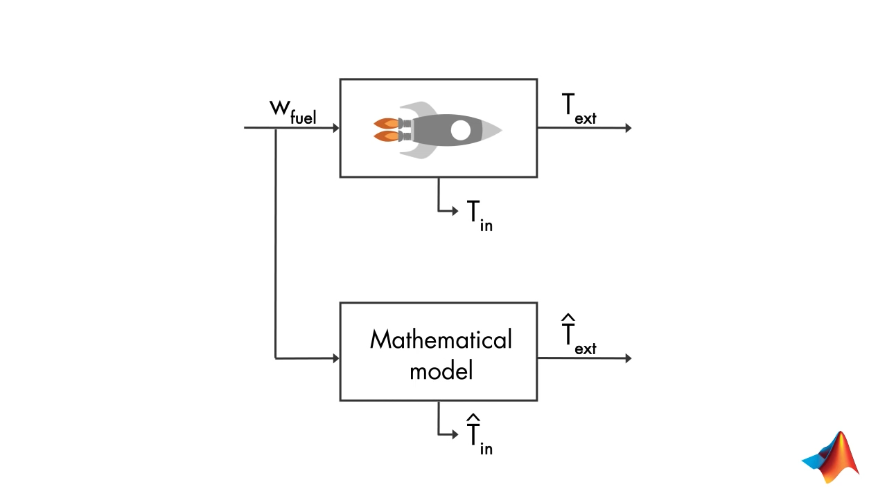
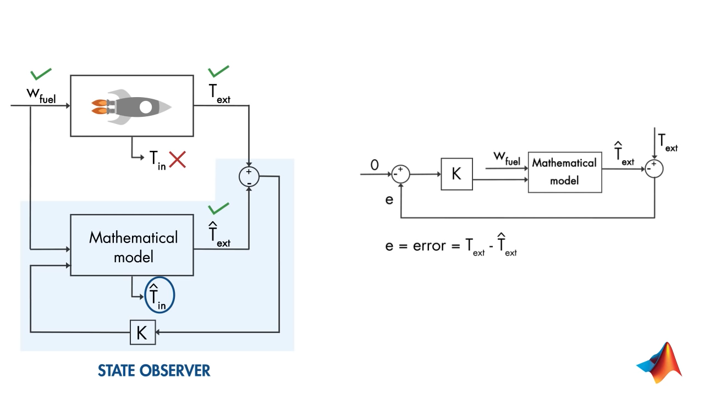
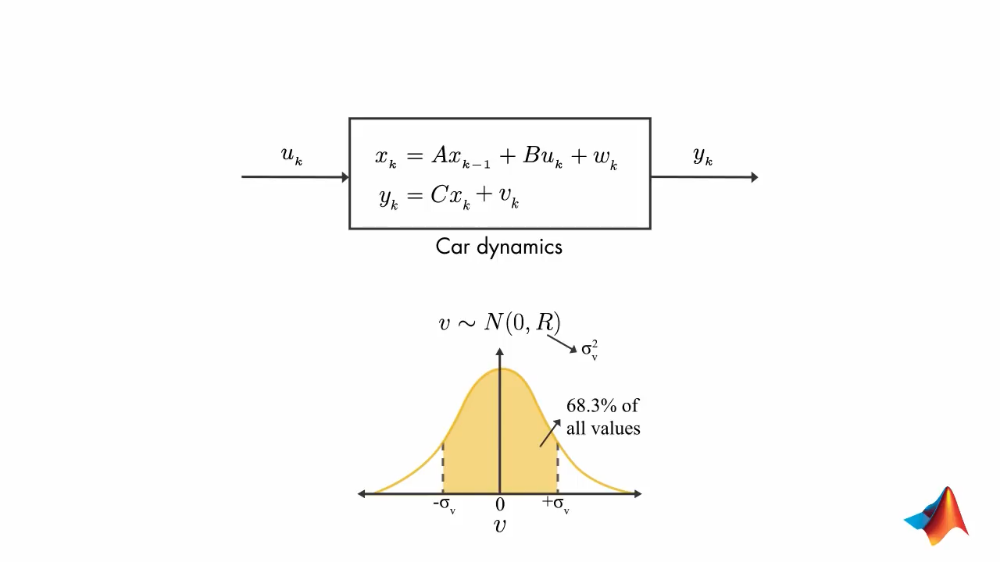
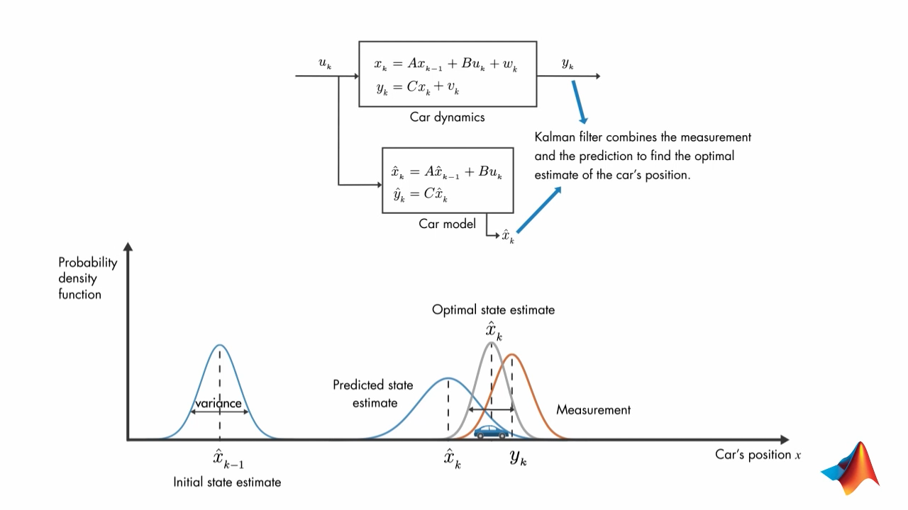
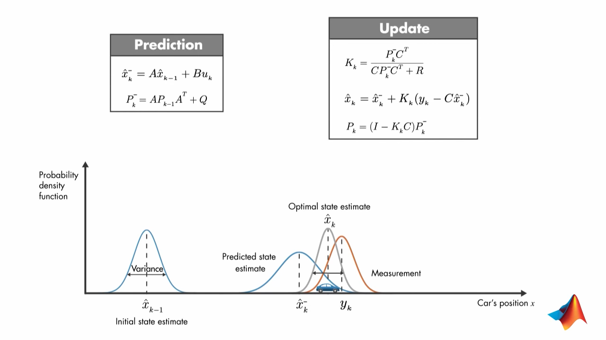
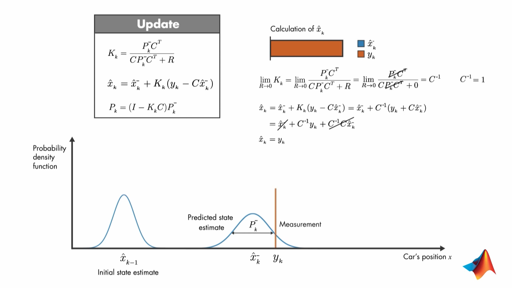
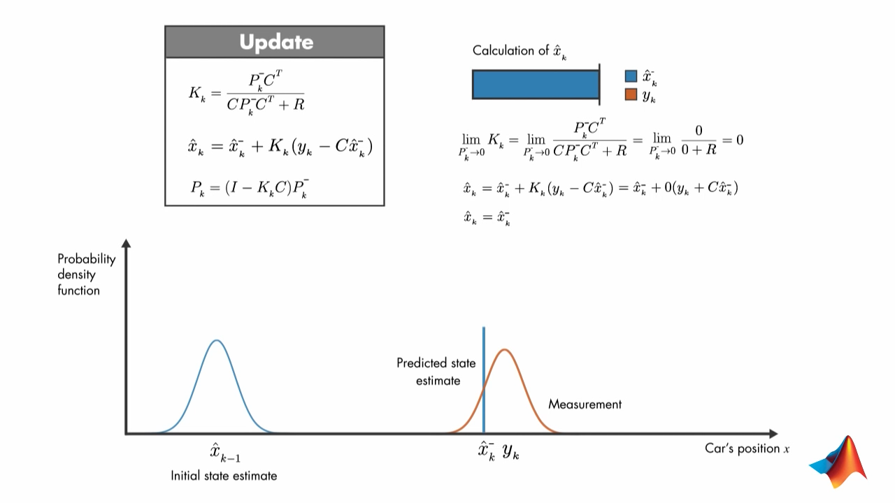
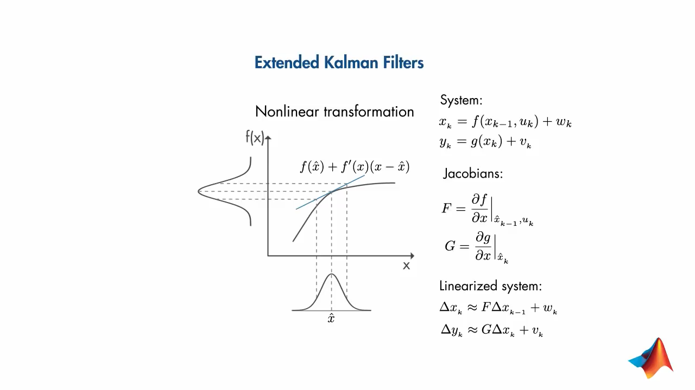
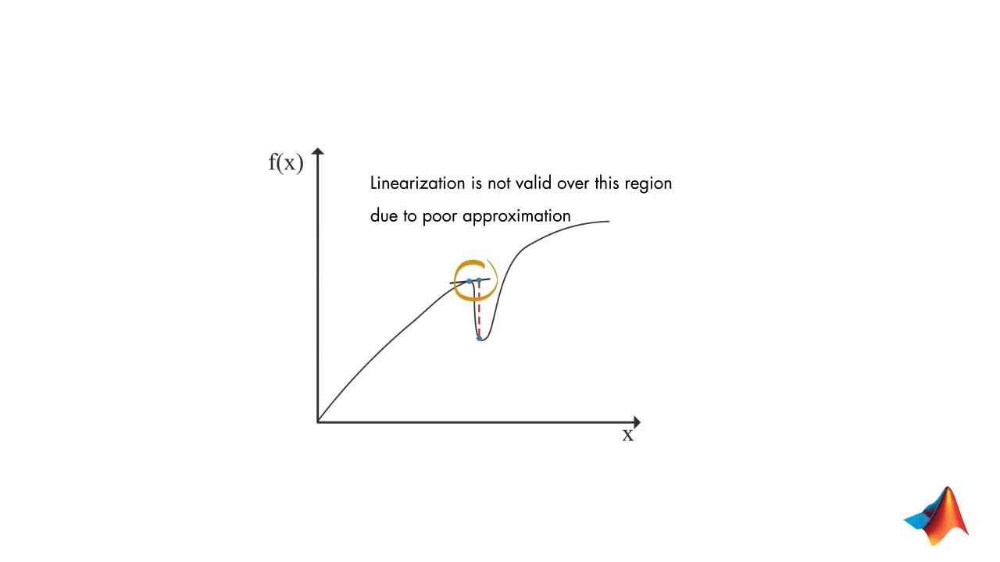
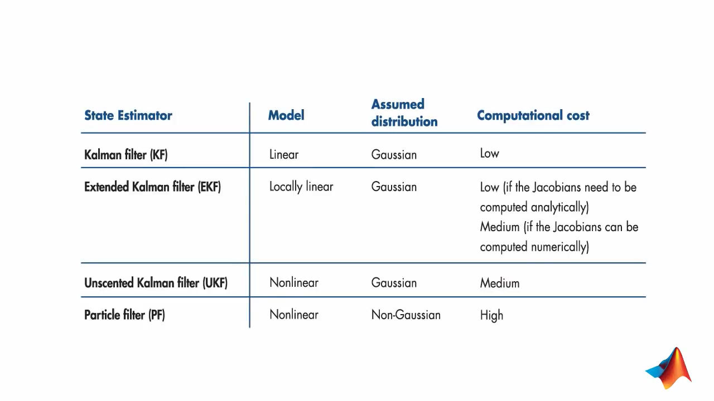

Kalman Filters
Table of Contents
1. When are they used?
- when we can't measured the desired value directly.
- when we have to estimate from multiple measurements.
1.1. An Example : Internal Temperature of Rocket Engine from External Temperature
Say we have as input:
- Fuel flow
- and External Temperature from sensors
If we have mathematical model of the system, then if your model and system would be exact then the measurements would match the estimated temperature. So, we use state estimator.

A feedback control system to minimize error between estimated temperature and measured temperature. 
Use \(W_{fuel}\) to estimate \(\hat{T}_{ext}\) and minimize error between that and measured \(T_{ext}\) . So that estimated \(\hat{T}_{in}\) is correct.
2. Kalman Filters - Optimal State Estimator
\(y_k\) is position (measured from GPS) \(u_k\) is velocity
\(v_k\) is error in measurement and \(w_k\) is process noise (error due to wind effects, velocity fluctuations)

with time the estimate of car's position and measurement differ. Combining thes two pieces of information is done by Kalman Filter. 
Multiply the probability density of the two esitmates to get the optimal state estimate. This estimate would have probability distribution with less variance.
2.1. Equations

\(P_k^{-}\) is error covariance matrix
The Kalman gain \(K_k\) is calculated such that it minimizes the prosteri error covariance \(P_k\)
\(R\) is measurement covariance
2.2. If error covariance in measurement is zero:

the state estimate is from measurement
2.3. If predicted state estimate variance is zero:
Then predicted state estimate is used as state estimate. 
3. Nonlinear state estimators
In real life either the state transition function (\(f\)) or the measurement function (\(g\)) may be nonlinear.
\(x_k = f(x_{k-1}, u_k) + w_k\) \(y_k = g(x_k) + v_k\)
Kalman filter assumes gaussian distribution and after linear transformation then the result is also gaussian. But if \(f\) is nonlinear then the result is not gaussian.
4. Extended Kalman Filters (EKFs)

Drawbacks to Using Extended Kalman Filters (EKFs):
- It is difficult to calculate the Jacobians (if they need to be found analytically)
- There is a high computational cost (if the Jacobians can be found numerically)
- EKF only works on systems that have a differentiable model
- EKF is not optimal if the system is highly nonlinear

5. Unscented Kalman Filters
5.0.1. Particle Filters
